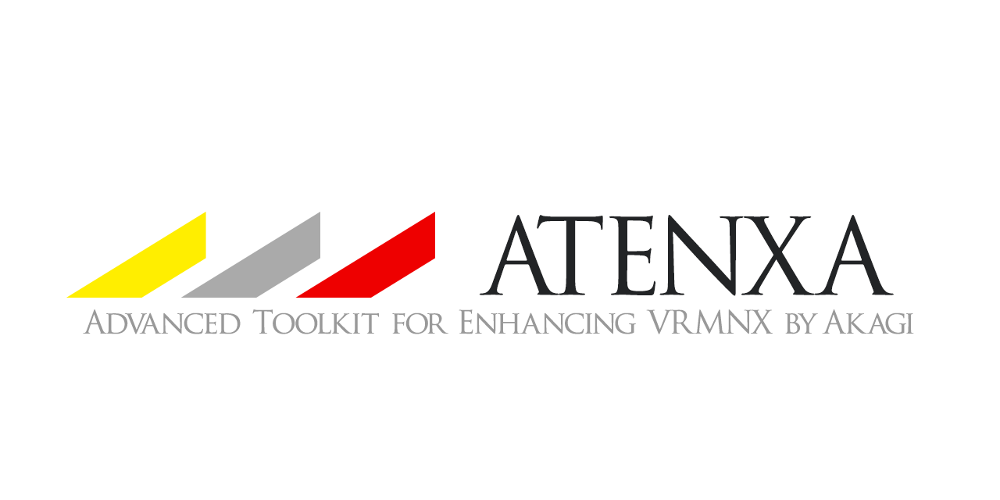

ATENXA for VRMNX¶
ATENXA (アテンザ) は， VRMNXのPythonスクリプトに便利な機能を提供するパッケージです。
主要な機能¶
汎用の便利なログ出力
便利な時間系イベントシステム
簡単に組み込め、リアルに動作する踏切
表示順入れ替えに対応するスプライトのラッパ
スプライトで動作する速度計
計画中の機能
自動運転
閉塞・ATS
Download and Install¶
ATENXAは下記のリンクからGitHubリポジトリの中身をZipで配布しています。
アーカイブ内の``atenxa``フォルダを、そのままお使いのレイアウトと同じフォルダ内にコピーしてください。
(root)
├─ atenxa
│ ├ __init__.py
│ └ ...
└─ YourLayout.vrmnx
ATENXAのバージョンが競合しないよう，レイアウトスクリプトで以下のようにセットアップすることを推奨します。
レイアウトスクリプト¶
1 2 3 4 5 6 7 8 9 10 11 | #LAYOUT
import vrmapi
# レイアウトと同じディレクトリのpythonスクリプトを優先的にインポートする
import os, sys
sys.path.insert(0, vrmapi.SYSTEM().GetLayoutDir())
import atenxa
def vrmevent(obj,ev,param):
pass
|
これでお使いのレイアウトから import atenxa できるようになります。
もくじ¶
外部リンク